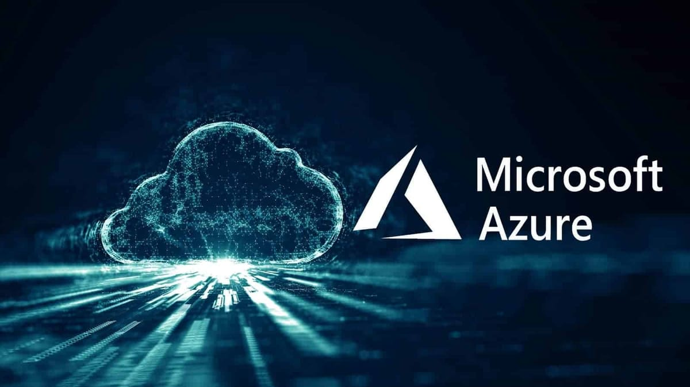
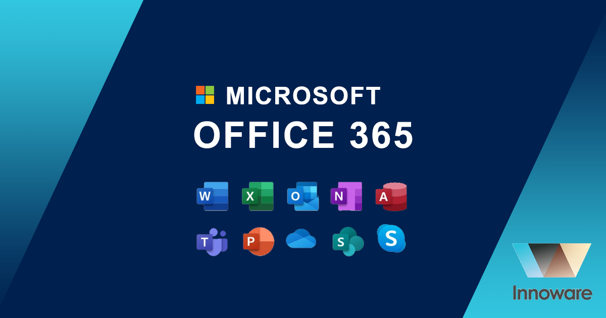
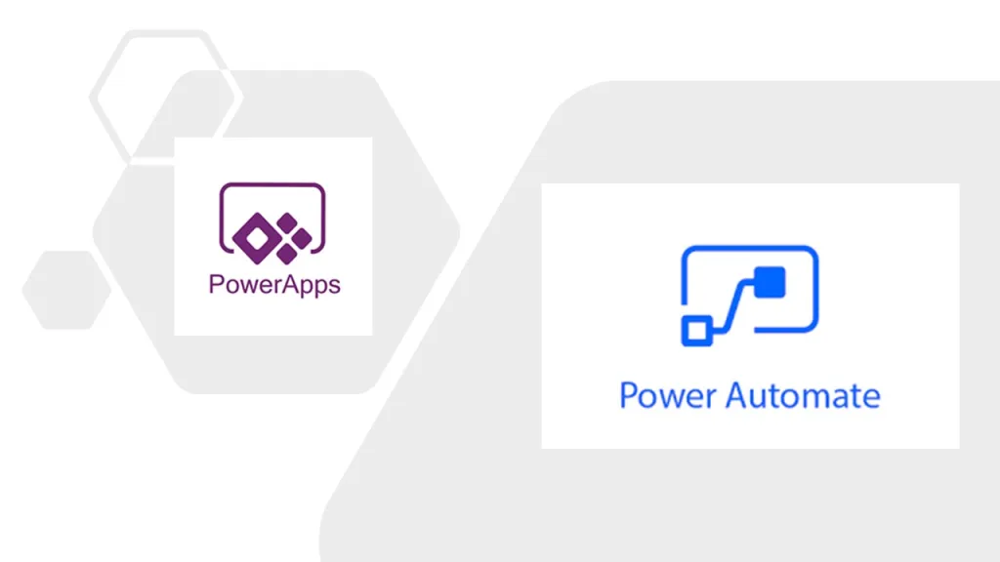

Get a comprehensive suite of Microsoft products and services that meet the needs of ugandan businesses.
A Microsoft certified Partner offering a range of Dynamics 365 Apps and other related IT services. Our partnership status reflects our expertise in Microsoft technologies and our commitment to delivering world-class solutions.
Your Data, Your Way-Visualize what matters most to you.
An integrated Enterprise Resource Planning (ERP) solution designed for small to mid-sized businesses. It centralizes and unifies critical functions like financials, sales, supply chain, and customer service into one on premise or cloud-based platform.
Microsoft Dynamics 365 Business Central (D365 BC) is Microsoft's modern, cloud-based Enterprise Resource Planning (ERP) solution. It serves as the unified successor to popular products like Dynamics NAV, GP, and SL. Built for small to upper mid-sized businesses, D365 BC is a comprehensive system designed to manage all core operations—from finances and manufacturing to supply chain, sales, and customer service. It also incorporates advanced, AI-powered features. Businesses have the flexibility to deploy D365 BC either in the Microsoft cloud or on-premises.
Dynamics 365 Business Central is a powerful, all-in-one ERP designed for speed and simplicity. It's engineered for fast implementation and easy configuration, with simplicity driving its design and usability.
This robust solution empowers organizations by connecting and managing all core areas from a single solution: financials, sales, purchasing, inventory, projects, service, and operations. It's flexible, adaptable, and scalable, growing alongside your business.
If you're looking to upgrade from Dynamics NAV, GP, Solomon, or another legacy ERP, Business Central is the ideal modern solution. It's available in both Online (Cloud) and On-premise deployment models to suit your specific needs.
Back
Microsoft's premier cloud computing platform offering scalable, flexible, and secure services, including virtual machines, databases, and AI tools, on a pay-as-you-go model.
At OrbitOps, we are your trusted guide for the entire Azure Cloud Migration journey. As a Microsoft Cloud Solution Partner (CSP), our certified consultants ensure a smooth, low-disruption transition for all your enterprise applications and databases, whether you're moving from in-house systems or another cloud.
Our focus extends beyond just the move; we are committed to securing, optimizing, and managing your Azure environment for peak performance and cost efficiency.
To ensure you maximize your investment, OrbitOps provides Azure Managed Services that keep your cloud infrastructure running smoothly and securely:
We also accelerate your development cycle with Azure DevOps Solutions, providing automated deployment pipelines, streamlined developer collaboration, and real-time performance and bug tracking.
Back
The essential cloud-based productivity suite for modern collaboration and communication. It includes industry-standard applications (Word, Excel, Outlook, Teams, outlook) plus cloud storage (OneDrive, SharePoint) to enhance efficiency and connect teams seamlessly.
Microsoft 365 is the ultimate cloud-based platform for modern productivity, combining essential apps and services to streamline communication, enhance teamwork, and simplify document management.
By choosing OrbitOps, you gain a trusted partner to implement this solution across your organization, enabling unparalleled productivity and allowing you to utilize its seamless integration, security, and cross-device compatibility to the fullest.
A leading business analytics tool that transforms complex raw data from various sources into actionable insights via interactive dashboards and visual reports.

With low or no code, analyze data, build custom applications and automate workflows.